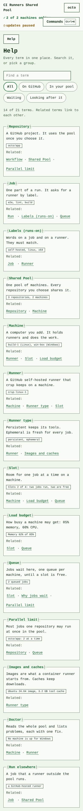
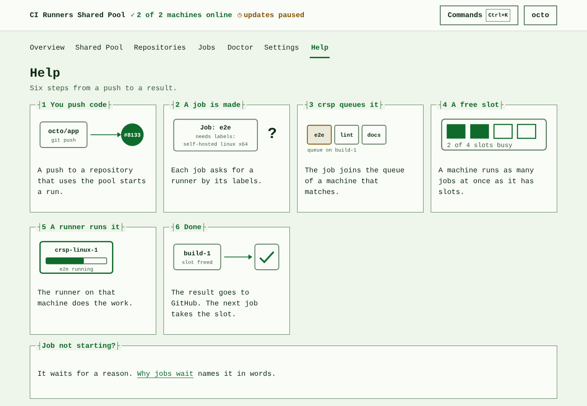
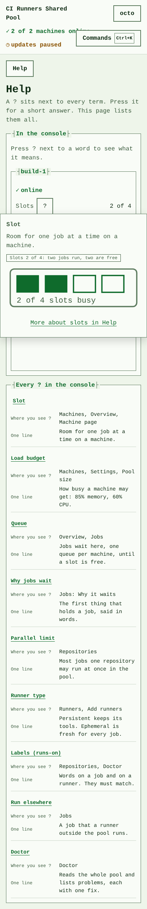
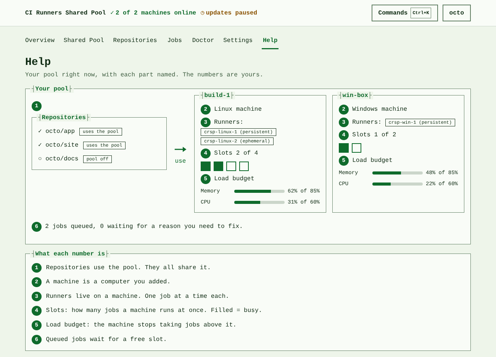
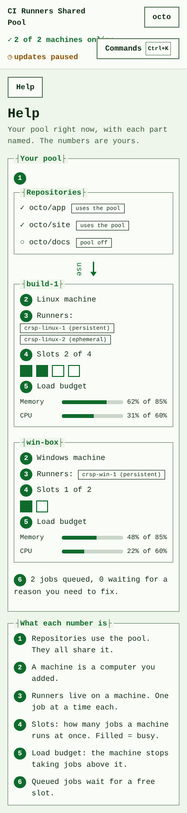
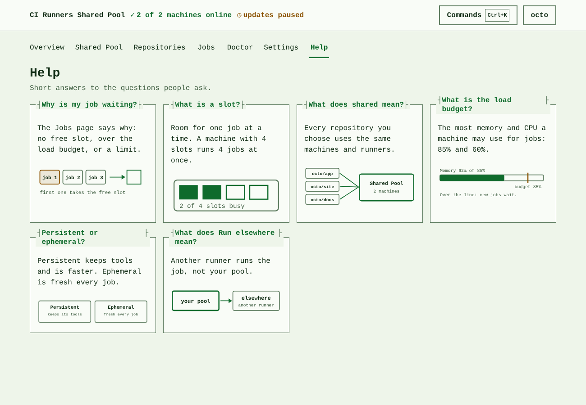

LOOK42: Help section proposals for the web console
Review only. Nothing is built, no pull request. Screens are the real apps/web build (real shell, real ds-* classes, API answered from fixtures), light theme Phosphor, full page at 1300 px and 393 px. The Help menu item and the page body are injected for the picture only. A scoped sheet (.hp-*, tokens only) draws the new visual parts. The key-hint bar and the "live updates paused" note are hidden in the shots (they are fixtures artefacts).
Comparison
| Proposal | How fast you understand it | Text amount | Phone fit | Effort | New shared parts |
|---|---|---|---|---|---|
| A. Picture first | Fast: the whole chain in 5 seconds | Low (one line per term) | Good: a tall diagram replaces the wide one | M | Job-path diagram, Term table row, Definition pane |
| B. Glossary first | Medium: you must find the term | Medium (21 cards) | Good: one column | S | Term card (a Pane today), related links |
| C. Step by step | Fast for "what happens"; slow to look up one term | Low | Good: one column | M | Story panel, 6 illustrations |
| D. ? next to every term | Fastest at the moment of doubt | Very low per use | Good as bottom sheet (UX-43) | M to L (touches every screen) | Help term button + popover content, uses Popover |
| E. Your pool right now | Fast and personal; needs a set-up pool | Low | Good: stacks | L | Pool diagram with callouts, live data |
| F. Questions and answers | Fast for the question you have | Low (2 lines each) | Good: one column | S | Question card (a Pane + picture) |
Proposals
A. Picture first
One diagram "how a job gets run": 7 numbered boxes in two groups (on GitHub, in your pool). A box is a link; the pane below shows its one-line definition, an example, a mini picture and related terms. A short term table follows. On a phone the diagram turns tall.


- Shows relations, not only words (UX-41).
- Little text; the table is one line a term.
- Same definitions feed D and B.
- Two diagram drawings (wide, tall).
- A 7-box chain hides branches (several machines, several repositories); E shows those.
Rules: follows CORE-1, 2, 3, 4, 7; UX-3, 10, 15, 16, 25 (table for 3 facts), 41 (picture with text equivalent: the table), 49. Would add: a component "Job path" and a words section "Help words" in content.md; boxes need aria labels (done) and 44 px targets on the phone.
B. Glossary first
A search bar and group chips over a grid of equal term cards: one line, an example, "Related" links.


- Easy to build: Panes in a card grid.
- Every term has the same shape.
- No picture of the whole; you must know the word.
- Cards look alike, so it is a wall of boxes.
Rules: UX-31 (search bar first, then chips), UX-10, UX-51 (one card shape), CORE-7. Would add: none; it reads like the Repositories list.
C. Step by step
Six panels like a comic strip, one idea each, one small picture each, one sentence each. Ends with a link to "Why jobs wait".


- Tells the story in order; easy for a first visit.
- Almost no jargon in the sentences.
- 6 cards leave an uneven last row at 1300 px (CORE-7 asks for a full row).
- Not a place to look up one term.
- Six pictures to draw and keep in step with the product.
Rules: CORE-6 asks for a wizard only for a guided flow that changes something; this only reads, so a plain grid is used (list as an owner question). UX-41. Would need: 6 or 3 columns so rows are full.
D. A ? next to every term
A "?" button beside Slots, Load budget, Queue and Runner type in the console opens a short popover: one line, an example, a mini picture, a link to Help. The Help page lists every ? (term, where you see it, one line). Shot shows the popover open; on a phone it is a bottom sheet.


- Help appears where the doubt appears.
- Tiny text per use.
- Touches many screens; each needs the button.
- A "?" is easy to miss; Help page needed anyway.
- Popover cannot hold a long answer.
Rules: UX-43 (anchored popover for a view-only overlay; bottom sheet on a phone), UX-44 (title, close, one primary: the popover needs a close button and a title), UX-46 (Escape closes), UX-47, UX-50 (not only on hover: it is a button), UX-16 (44 px). Would add: a "Help term" part and a Help words section.
E. Your pool right now
The owner's own data drawn as a diagram: repositories use the pool; each machine shows its runners, slots (filled = busy) and load bars against the budget. Numbers 1 to 6 name each part; a legend explains them.


- Most concrete: "this is my build-1".
- Uses real shared parts (Pane, level bars).
- Empty for a new pool (needs a first-run variant).
- Overlaps the Overview and Shared Pool pages (UX-52: one place per command, and no duplicate views).
- Does not explain waiting.
Rules: UX-19 (one source of truth, live), UX-10, UX-41, UX-6 (needs an empty state). Would add: callout badge, slot row.
F. Questions and answers
Six cards titled by the question, an answer of at most two lines, one picture each.


- Matches how people ask.
- Very short; easy to extend.
- Does not show how terms connect.
- Question titles wrap on narrow cards; answers lean on other words.
Rules: UX-10, UX-51, CORE-3. Would add: none. Good as a section under A.
Terms and how they relate
The content every proposal uses. Words are those of docs/design-system/v2/content.md. One chain: GitHub account → Repository → Workflow → Run → Job (labels) → Queue (one per machine) → Slot → Runner → Machine, all inside one Shared Pool.
| Term | One line | Example | Related to |
|---|---|---|---|
| GitHub account or organisation | Owns repositories. You sign in with it. | octo, acme | Repository |
| Repository | A GitHub project. It uses the pool once you choose it (Use pool). | octo/app | Workflow, Shared Pool, Parallel limit |
| Workflow | A file in the repository that says what to run. | ci.yml | Run, Labels |
| Run | One start of a workflow, for example a push. | Run #8133 | Workflow, Job |
| Job | One part of a run. It asks for a runner by label. | e2e, lint | Run, Labels, Queue |
| Labels (runs-on) | Words on a job and on a runner. They must match. crsp keeps the repository variables RUNS_ON_LINUX, RUNS_ON_WINDOWS, RUNS_ON_MACOS. | self-hosted, linux, x64 | Job, Runner |
| Shared Pool ("shared") | One pool of machines. Every repository you choose shares it. | 3 repositories, 2 machines | Repository, Machine |
| Machine | A computer you add. It holds runners and does the work. | build-1, win-box | Runner, Slot, Load budget |
| Runner | A GitHub self-hosted runner crsp keeps on a machine. | crsp-linux-1 | Machine, Runner type, Slot |
| Runner type | Persistent keeps its tools and caches. Ephemeral is a fresh container for every job. Also by OS (Linux, Windows, macOS). | persistent, ephemeral | Runner, Images and caches |
| Slot | Room for one job at a time on a machine. A machine has a fixed number. | Slots 2 of 4 | Machine, Load budget, Queue |
| Load budget | How busy a machine may get: by default 85% memory and 60% CPU in total. Over it, a new job waits. | Memory 62% of 85% | Slot, Queue |
| Queue | One per machine. A job waits for first place, a free slot and load under budget. Order: priority, then fair share between repositories. | 2 queued jobs | Slot, Why jobs wait, Parallel limit |
| Why jobs wait | The first blocker, in words: No machine has this OS and these labels; Over the load budget; No free slot: n ahead; The repository is at its parallel limit; The machine is not taking jobs. | No free slot: 2 ahead in the queue. | Queue, Parallel limit, Load budget |
| Parallel limit | Most jobs one repository may run at once in the pool. | 2 at a time | Repository, Queue |
| Not taking jobs | Paused, On battery or Quiet hours: no new job, running jobs finish. | Paused | Machine, Why jobs wait |
| Images and caches | Images are what a container runner starts from. Caches keep downloads so jobs start faster. | Ubuntu 24.04 image | Runner type |
| Doctor | Reads the whole pool and lists problems, each with one fix. It only reads. | No machine is up for Windows | Machine, Runner |
| Tray app | A small icon on the PC: open the console, pause, update. | Pause for 1 hour | Not taking jobs |
| Run elsewhere | A job that a runner outside the pool runs. (Hosted fallback is the nearest documented case: jobs go to GitHub-hosted runners when no crsp machine is up.) | a GitHub-hosted runner | Job, Shared Pool |
| Run insights, Charts | Wait and run time of finished jobs. Charts is a Jobs tab: Run time and wait per day, Jobs per day, Forecast against actual, Busiest hours. | Median wait | Jobs |
Where the docs disagree or say nothing
- Glossary is empty.
docs/overview/glossary.mdis a template row only. The term map above is built fromcontent.mdand the specs. - "Run elsewhere" and "Run insights" are not in the docs or the app. They appear in the task wording only. The branch
CIX21-insights-apiexists but holds just an agent report. My lines for both are drafts. - Three names for the runner kind: "Kind" (Add runners), "Runner type" (Jobs: By runner type, UX-61:
persistent, state kept between jobs/ephemeral, fresh for every job) and "isolation" (UX-61: microVM, VM, container, persistent; runners spec). The owner's "runner type (Linux/Windows/container image)" is a fourth reading. - Quiet hours mean different things. product.md: a machine can be pool-only at night. scheduling R5.56 (not built, M3): own slot count and budget by day. scheduling R5.68 and content.md Machine policy: no new job in quiet hours. content.md Docker disk: Quiet hours start/end (01:00 to 06:00) are the window for making Docker's disk smaller.
- Slots versus pool size. product.md and scheduling talk of a slot count; content.md Pool size sets memory and CPUs ("Recommended: half of the free room"); scheduling also has light and heavy slots that content.md does not name.
- Load budget default. Docs say 85% memory, 60% CPU. The e2e fixture uses 80/80. I did not check the controller code, so Help must read the value from the machine, not repeat 85/60 as fixed text.
- Design system version. product.md says v1 is binding; the highest folder is v2 (used here).
- Screens. product.md lists nine screens; the console has six menu items (Overview, Shared Pool, Repositories, Jobs, Doctor, Settings). Doctor spec calls the Doctor "screen 8".
- Held-job reasons. scheduling says "machine paused" and "on battery" join later; content.md already has words for them.
- Public repositories: product.md says forks never run unless turned on; content.md adds the Runner kind default (Ephemeral only for public). Not in the term map; Help may need a line.
Could not render or check
- The Help menu item and page are injected; there is no route in the app yet, so deep links and the real focus order are not tested.
- The "?" popover in D is drawn open by setting
aria-expanded; the realPopoverpart was not wired. On the phone shot the bottom sheet is placed by the full-page capture at the bottom of the first screen. - Clicking a diagram box in A is wired in the markup (
data-term) but the shots are static; the definition shown is Slot. - In the 393 px shots the real shell header shows the status line partly under the Commands button ("2 of 2 machines onli"). This is in the unchanged shell with these fixtures; I did not look into it. Worth a look separately.
- Only the Phosphor theme was shown (light for all, dark for A). The other five themes were not checked.
- No test kit was run (no-app-CSS scan, DOM layout at 360/393/1300, wizard behaviour): nothing in the app changed.
Questions for the owner
- Go with A + D? Or is E ("my pool") the better first picture?
- Where does Help live: a 7th menu item, or under Settings, or a button in the top bar next to Commands?
- What exactly do "Run elsewhere" and "Run insights" mean, and where do users see them? Is "Run elsewhere" the hosted fallback, or a runner outside the pool?
- One word for the runner kind: Kind, Runner type or Isolation? Is "runner type" Linux/Windows or persistent/ephemeral?
- Quiet hours: which meaning is right (no new jobs, pool-only at night, own budget by day, Docker disk window)?
- Show the load budget as the fixed 85%/60% or the machine's own value?
- Should Help show example numbers or only the user's real data (E)?
- Should a new pool see the picture on the Overview first-run strip (replacing "How crsp works")?
- Does the Help page need a wizard (CORE-6) for the step-by-step version, or is a plain grid fine for read-only content?
- Languages: English only?
- Do you want the tray app and Doctor explained here, or in their own screens?